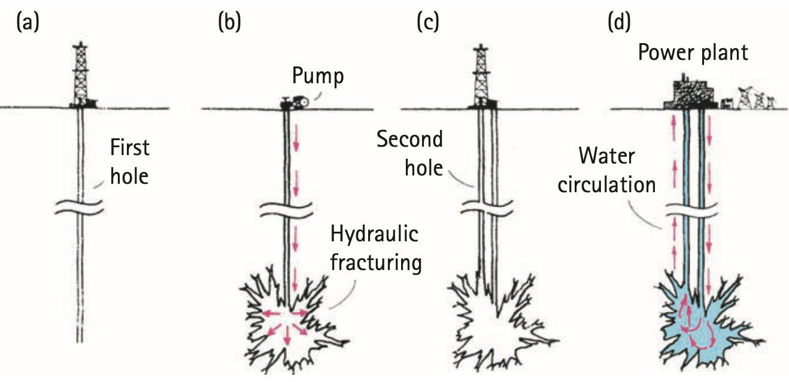

Unit 4.5 · Activity 1 · Energy in SocietyProblem 1
Problem 1
DOK 1
1. Give one example of an energy source and one example of an energy carrier, and explain the distinction.
Unit 4.5 · Activity 1 · Energy in SocietySolution 1
Solution 1
DOK 1
1. Give one example of an energy source and one example of an energy carrier, and explain the distinction.
Answer / rationale: Example source: sunlight (solar resource). Example carrier: electricity or hydrogen. A source is where usable energy is obtained; a carrier stores or transports energy that was supplied from a source.
Unit 4.5 · Activity 1 · Energy in SocietyProblem 2
Problem 2
DOK 1
2. What does renewable mean in the context of an energy resource?
Unit 4.5 · Activity 1 · Energy in SocietySolution 2
Solution 2
DOK 1
2. What does renewable mean in the context of an energy resource?
Answer / rationale: Renewable means the resource is naturally replenished on a human timescale, often at a rate comparable to or faster than its use.
Unit 4.5 · Activity 1 · Energy in SocietyProblem 3
Problem 3
DOK 1
3. Why is thermal energy often described as less useful rather than destroyed?
Unit 4.5 · Activity 1 · Energy in SocietySolution 3
Solution 3
DOK 1
3. Why is thermal energy often described as less useful rather than destroyed?
Answer / rationale: Thermal energy is not destroyed; it remains part of the conserved energy account. It is often called less useful because it becomes dispersed in surroundings and is harder to recover for the intended task.
Unit 4.5 · Activity 1 · Energy in SocietyProblem 4
Problem 4
DOK 1
4. What is geothermal energy?
Unit 4.5 · Activity 1 · Energy in SocietySolution 4
Solution 4
DOK 1
4. What is geothermal energy?
Answer / rationale: Geothermal energy is energy obtained from Earth's internal heat.
Unit 4.5 · Activity 1 · Energy in SocietyProblem 5
Problem 5
DOK 1
5. State the conservation problem with a machine that claims continuous output with no continuing input.
Unit 4.5 · Activity 1 · Energy in SocietySolution 5
Solution 5
DOK 1
5. State the conservation problem with a machine that claims continuous output with no continuing input.
Answer / rationale: Continuous useful output with no continuing input would violate conservation of energy unless the device is drawing down stored energy or an input/transfer has been overlooked.
Unit 4.5 · Activity 1 · Energy in SocietyProblem 6
Problem 6
DOK 2
6. A lamp receives 200 J of electrical energy. Measurements find 32 J as useful light. How much energy must appear in other forms if the account is complete?
Unit 4.5 · Activity 1 · Energy in SocietySolution 6
Solution 6
DOK 2
6. A lamp receives 200 J of electrical energy. Measurements find 32 J as useful light. How much energy must appear in other forms if the account is complete?
Work: Other forms $=200-32=168\text{ J}$. Answer: $168\text{ J}$ must appear in thermal and/or other outputs.
Unit 4.5 · Activity 1 · Energy in SocietyProblem 7
Problem 7
DOK 2
7. Use the geothermal diagram to trace the energy path from hot rock to electricity and identify one place where less-useful thermal transfer can occur.

Unit 4.5 · Activity 1 · Energy in SocietySolution 7
Solution 7
DOK 2
7. Use the geothermal diagram to trace the energy path from hot rock to electricity and identify one place where less-useful thermal transfer can occur.
Rationale: Hot rock transfers thermal energy to a fluid/water; the moving fluid/steam drives a turbine; the turbine drives a generator that produces electrical energy. Less-useful thermal transfer can occur to surrounding rock, pipes, cooling equipment, or the environment.
Unit 4.5 · Activity 1 · Energy in SocietyProblem 8
Problem 8
DOK 2
8. Compare solar and geothermal electricity for a specific community using availability, reliability, environmental impact, and efficiency. State what local evidence would be needed.
Unit 4.5 · Activity 1 · Energy in SocietySolution 8
Solution 8
DOK 2
8. Compare solar and geothermal electricity for a specific community using availability, reliability, environmental impact, and efficiency. State what local evidence would be needed.
Rationale: A defensible comparison should use local solar availability, local geothermal resource quality, reliability/capacity over time, environmental impacts, and conversion efficiency. Needed evidence includes solar-resource data, geothermal surveys, expected output profiles, land/water/emissions impacts, and measured/estimated efficiencies for the specific community.
Unit 4.5 · Activity 1 · Energy in SocietyProblem 9
Problem 9
DOK 2
9. A battery powers a motor that turns a fan. Identify the carrier or transfer stages and at least two energy transformations in the chain.
Unit 4.5 · Activity 1 · Energy in SocietySolution 9
Solution 9
DOK 2
9. A battery powers a motor that turns a fan. Identify the carrier or transfer stages and at least two energy transformations in the chain.
Rationale: The battery stores chemical energy, electrical energy is carried through the circuit to the motor, the motor transforms electrical energy into mechanical/kinetic energy, and the fan transfers kinetic energy to moving air. Thermal and sound outputs also occur.
Unit 4.5 · Activity 1 · Energy in SocietyProblem 10
Problem 10
DOK 2
10. A system receives 800 J and gives 520 J useful output. Complete the energy ledger by finding the less-useful output and explain why the result does not mean energy was lost.
Unit 4.5 · Activity 1 · Energy in SocietySolution 10
Solution 10
DOK 2
10. A system receives 800 J and gives 520 J useful output. Complete the energy ledger by finding the less-useful output and explain why the result does not mean energy was lost.
Work: Less-useful output $=800-520=280\text{ J}$. Rationale: The $280\text{ J}$ is not lost; it appears in other energy forms or transfers, commonly thermal/sound, so the full ledger still totals $800\text{ J}$.
Unit 4.5 · Activity 1 · Energy in SocietyProblem 11
Problem 11
DOK 3
11. A video shows a sealed spinning box powering lights and claims there is no input. Build an evidence checklist that could distinguish hidden stored/input energy from a genuine conservation violation.
Unit 4.5 · Activity 1 · Energy in SocietySolution 11
Solution 11
DOK 3
11. A video shows a sealed spinning box powering lights and claims there is no input. Build an evidence checklist that could distinguish hidden stored/input energy from a genuine conservation violation.
Rationale: Check for batteries/fuel, hidden wires or wireless power, initial stored rotational/elastic/chemical/thermal energy, mass or temperature changes, and all electrical/thermal outputs. Measure input and output over a long interval with calibrated instruments and seek independent replication before claiming a conservation violation.
Unit 4.5 · Activity 1 · Energy in SocietyProblem 12
Problem 12
DOK 3
12. A student ranks one energy source “best” because it is renewable. Critique the one-factor ranking and propose a more defensible evidence-based comparison.
Unit 4.5 · Activity 1 · Energy in SocietySolution 12
Solution 12
DOK 3
12. A student ranks one energy source “best” because it is renewable. Critique the one-factor ranking and propose a more defensible evidence-based comparison.
Rationale: “Renewable” is only one criterion. A stronger comparison uses availability, reliability, environmental impact, efficiency, and local context/evidence (and, when relevant, cost, safety, and infrastructure) to explain tradeoffs rather than declaring one source universally best.
Unit 4.5 · Activity 1 · Energy in SocietyProblem 13
Problem 13
DOK 1
13. A source differs from a carrier because a source
A. is where usable energy is obtained, while a carrier stores or transports supplied energy
B. always has zero environmental impact
C. must be electrical
D. cannot undergo transformations
E. is always renewable
Unit 4.5 · Activity 1 · Energy in SocietySolution 13
Solution 13
DOK 1
13. A source differs from a carrier because a source
A. is where usable energy is obtained, while a carrier stores or transports supplied energy
B. always has zero environmental impact
C. must be electrical
D. cannot undergo transformations
E. is always renewable
Answer: A — is where usable energy is obtained, while a carrier stores or transports supplied energy Work / rationale: A source is where usable energy is obtained; a carrier stores or transports energy supplied from a source.
Unit 4.5 · Activity 1 · Energy in SocietyProblem 14
Problem 14
DOK 1
14. Geothermal energy comes from
A. Earth’s internal heat
B. moving air
C. sunlight stored directly in a wire
D. hydrogen itself creating energy
E. ocean momentum only
Unit 4.5 · Activity 1 · Energy in SocietySolution 14
Solution 14
DOK 1
14. Geothermal energy comes from
A. Earth’s internal heat
B. moving air
C. sunlight stored directly in a wire
D. hydrogen itself creating energy
E. ocean momentum only
Answer: A — Earth’s internal heat Work / rationale: Geothermal energy comes from Earth's internal heat.
Unit 4.5 · Activity 1 · Energy in SocietyProblem 15
Problem 15
DOK 1
15. Less-useful thermal output means
A. energy remains present but is harder to use for the intended task
B. energy was destroyed
C. conservation failed
D. the input was zero
E. the device created mass
Unit 4.5 · Activity 1 · Energy in SocietySolution 15
Solution 15
DOK 1
15. Less-useful thermal output means
A. energy remains present but is harder to use for the intended task
B. energy was destroyed
C. conservation failed
D. the input was zero
E. the device created mass
Answer: A — energy remains present but is harder to use for the intended task Work / rationale: Less-useful thermal output is still energy; it is simply harder to recover for the intended task.
Unit 4.5 · Activity 1 · Energy in SocietyProblem 16
Problem 16
DOK 2
16. A device with 250 J input and 190 J useful output must account for at least
A. 60 J elsewhere
B. 440 J elsewhere
C. 190 J lost forever
D. 250 J created
E. 0 J because useful output is all that matters
Unit 4.5 · Activity 1 · Energy in SocietySolution 16
Solution 16
DOK 2
16. A device with 250 J input and 190 J useful output must account for at least
A. 60 J elsewhere
B. 440 J elsewhere
C. 190 J lost forever
D. 250 J created
E. 0 J because useful output is all that matters
Answer: A — 60 J elsewhere Work / rationale: Other output $=250-190=60\text{ J}$.
Unit 4.5 · Activity 1 · Energy in SocietyProblem 17
Problem 17
DOK 2
17. Which criterion asks whether a resource is available when and where needed?
A. availability
B. momentum
C. contact time
D. mass
E. impulse
Unit 4.5 · Activity 1 · Energy in SocietySolution 17
Solution 17
DOK 2
17. Which criterion asks whether a resource is available when and where needed?
A. availability
B. momentum
C. contact time
D. mass
E. impulse
Answer: A — availability Work / rationale: Availability asks whether a resource is present when and where it is needed.
Unit 4.5 · Activity 1 · Energy in SocietyProblem 18
Problem 18
DOK 2
18. Which criterion asks how consistently energy can be delivered?
A. reliability
B. height
C. kinetic energy
D. impulse
E. system mass
Unit 4.5 · Activity 1 · Energy in SocietySolution 18
Solution 18
DOK 2
18. Which criterion asks how consistently energy can be delivered?
A. reliability
B. height
C. kinetic energy
D. impulse
E. system mass
Answer: A — reliability Work / rationale: Reliability asks how consistently energy can be delivered.
Unit 4.5 · Activity 1 · Energy in SocietyProblem 19
Problem 19
DOK 2
19. A fuel cell changes stored chemical energy most directly into
A. electrical energy plus other outputs
B. new energy from nothing
C. momentum only
D. mass
E. gravitational potential energy only
Unit 4.5 · Activity 1 · Energy in SocietySolution 19
Solution 19
DOK 2
19. A fuel cell changes stored chemical energy most directly into
A. electrical energy plus other outputs
B. new energy from nothing
C. momentum only
D. mass
E. gravitational potential energy only
Answer: A — electrical energy plus other outputs Work / rationale: A fuel cell transforms hydrogen's stored chemical energy mainly into electrical energy plus thermal/other outputs.
Unit 4.5 · Activity 1 · Energy in SocietyProblem 20
Problem 20
DOK 2
20. Why does a perpetual-motion claim require extraordinary evidence?
A. It conflicts with well-tested energy conservation unless an input or transfer has been missed.
B. It uses too much momentum.
C. It must have zero efficiency.
D. Renewable sources are impossible.
E. Thermal energy cannot exist.
Unit 4.5 · Activity 1 · Energy in SocietySolution 20
Solution 20
DOK 2
20. Why does a perpetual-motion claim require extraordinary evidence?
A. It conflicts with well-tested energy conservation unless an input or transfer has been missed.
B. It uses too much momentum.
C. It must have zero efficiency.
D. Renewable sources are impossible.
E. Thermal energy cannot exist.
Answer: A — It conflicts with well-tested energy conservation unless an input or transfer has been missed. Work / rationale: A true perpetual-motion claim conflicts with well-tested energy conservation unless some input, stored energy, or transfer has been overlooked.